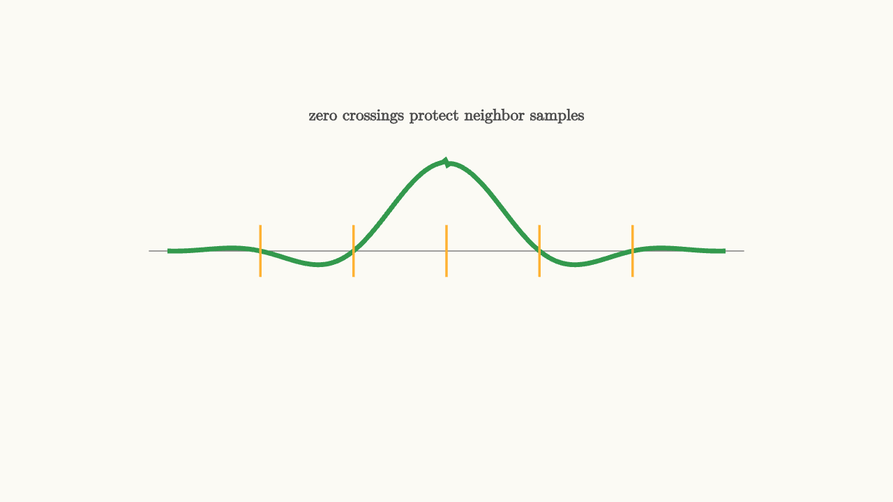

Raised Cosine Pulses Control Neighbors
A communication pulse has two audiences. The channel cares about bandwidth. The receiver cares about clean symbol samples.
A narrow pulse in time uses wide bandwidth. A narrow pulse in frequency spreads in time. Raised cosine shaping is a practical compromise: allow the pulse to spread, while arranging its zero crossings so neighbor symbols contribute nothing at the decision instants.

source
background = [0.985, 0.98, 0.955, 1]
camera = Camera(4.8b)
mesh diagram = block {
. stroke{GRAY, 1} Line(start: [-3.2, 0, 0], end: [3.2, 0, 0])
. stroke{GREEN, 4} ExplicitFunc(|t| 0.95 * sin(3.14 * t) / (3.14 * t + 0.001) * cos(0.55 * t), [-3.0, 3.0, 260])
. stroke{ORANGE, 2} Line(start: [-2, -0.28, 0], end: [-2, 0.28, 0])
. stroke{ORANGE, 2} Line(start: [-1, -0.28, 0], end: [-1, 0.28, 0])
. stroke{ORANGE, 2} Line(start: [0, -0.28, 0], end: [0, 0.28, 0])
. stroke{ORANGE, 2} Line(start: [1, -0.28, 0], end: [1, 0.28, 0])
. stroke{ORANGE, 2} Line(start: [2, -0.28, 0], end: [2, 0.28, 0])
. center{[0, 1.45, 0]} color{DARK_GRAY} Text("zero crossings protect neighbor samples", 0.62)
}
"zero isi"
play Fade(0.6)The zero-ISI condition is
for every nonzero integer $k$, and
At the receiver's sample time for one symbol, every neighboring pulse crosses zero. Many pulses overlap in time, but only the intended symbol contributes at that instant.
What the rolloff parameter buys
Raised cosine filters have a rolloff factor, usually called $\alpha$, between 0 and 1.
When $\alpha=0$, the frequency response is rectangular. This uses the minimum theoretical bandwidth, but the time-domain pulse is a sinc with long tails.
When $\alpha$ is larger, the frequency response has a smoother transition band. The signal uses more bandwidth, and the time-domain tails decay faster.
The trade is clear:
- small rolloff uses less bandwidth
- larger rolloff gives more time localization and easier implementation
- every valid rolloff keeps the zero crossings at symbol-spaced samples
source
param rolloff = 0.25
background = [0.985, 0.98, 0.955, 1]
camera = Camera(4.8b)
let Pulse = |rolloff, col| block {
. stroke{LIGHT_GRAY, 1} Line(start: [-3.0, 0, 0], end: [3.0, 0, 0])
. stroke{col, 4} ExplicitFunc(|t| 0.92 * sin(3.14 * t) / (3.14 * t + 0.001) * exp(-0.12 * rolloff * t * t), [-3.0, 3.0, 260])
. stroke{ORANGE, 2} Line(start: [-2, -0.25, 0], end: [-2, 0.25, 0])
. stroke{ORANGE, 2} Line(start: [-1, -0.25, 0], end: [-1, 0.25, 0])
. stroke{ORANGE, 2} Line(start: [0, -0.25, 0], end: [0, 0.25, 0])
. stroke{ORANGE, 2} Line(start: [1, -0.25, 0], end: [1, 0.25, 0])
. stroke{ORANGE, 2} Line(start: [2, -0.25, 0], end: [2, 0.25, 0])
}
let Spectrum = |rolloff, col| block {
. stroke{LIGHT_GRAY, 1} Line(start: [-2.4, -1.35, 0], end: [2.4, -1.35, 0])
. stroke{col, 4} Polyline([[-2.2, -1.35, 0], [-1.15 - rolloff * 0.55, -1.35, 0], [-0.85, -0.72, 0], [0.85, -0.72, 0], [1.15 + rolloff * 0.55, -1.35, 0], [2.2, -1.35, 0]])
}
"small rolloff"
mesh title = center{[0, 1.58, 0]} color{DARK_GRAY} Text("rolloff trades bandwidth for shorter tails", 0.62)
mesh pulse = Pulse(rolloff: $rolloff, col: BLUE)
mesh spectrum = Spectrum(rolloff: $rolloff, col: BLUE)
mesh label = center{[0, -1.78, 0]} color{DARK_GRAY} Text("small rolloff: narrow band, longer tails", 0.62)
play Write(0.8)
play Fade(0.6)
"larger rolloff"
rolloff = 0.85
pulse = Pulse(rolloff: $rolloff, col: GREEN)
spectrum = Spectrum(rolloff: $rolloff, col: GREEN)
label = center{[0, -1.78, 0]} color{DARK_GRAY} Text("larger rolloff: wider band, shorter tails", 0.62)
play Lerp(1.2)
"sample protection"
pulse = block {
. stroke{GREEN, 4} ExplicitFunc(|t| 0.92 * sin(3.14 * t) / (3.14 * t + 0.001) * exp(-0.10 * t * t), [-3.0, 3.0, 260])
. fill{WHITE} stroke{ORANGE, 2} center{[-2, 0, 0]} Circle(0.08)
. fill{WHITE} stroke{ORANGE, 2} center{[-1, 0, 0]} Circle(0.08)
. fill{WHITE} stroke{ORANGE, 2} center{[0, 0.92, 0]} Circle(0.08)
. fill{WHITE} stroke{ORANGE, 2} center{[1, 0, 0]} Circle(0.08)
. fill{WHITE} stroke{ORANGE, 2} center{[2, 0, 0]} Circle(0.08)
}
label = center{[0, -1.78, 0]} color{DARK_GRAY} Text("neighbors touch zero at decision times", 0.62)
play Trans(1.0)
play Fade(0.3)The formula in the scene is schematic, because exact raised cosine code would distract from the lesson. The animation shows the central design pressure: wider transition in frequency buys a pulse that behaves better in time, while the symbol-spaced zeros remain the sacred constraint.
Root raised cosine in real transmitters
Most practical systems use root raised cosine filters. The transmitter applies one root raised cosine filter, and the receiver's matched filter applies another. The cascade forms a raised cosine response.
This is a clever split. The transmitter keeps the spectrum controlled. The receiver gets matched-filter gain against noise. Together they produce zero-ISI samples when timing is correct.
The word "together" matters. A transmitter pulse alone may not have the final raised cosine shape. The combined transmit filter, channel, receive filter, and timing recovery decide what the sampler sees.
Why neighbors are the main enemy
Noise moves samples randomly. Neighboring symbols move samples systematically. If the previous and next symbols leak into the current sample, the receiver sees a biased decision variable. The bias depends on the surrounding data pattern, which makes errors harder to predict and harder to fix.
Raised cosine shaping gives the receiver a clean target. At the right sampling instants, pulse tails from other symbols vanish. When the sampling clock drifts, those tails reappear. That is why the next lesson focuses on symbol timing and the eye diagram.